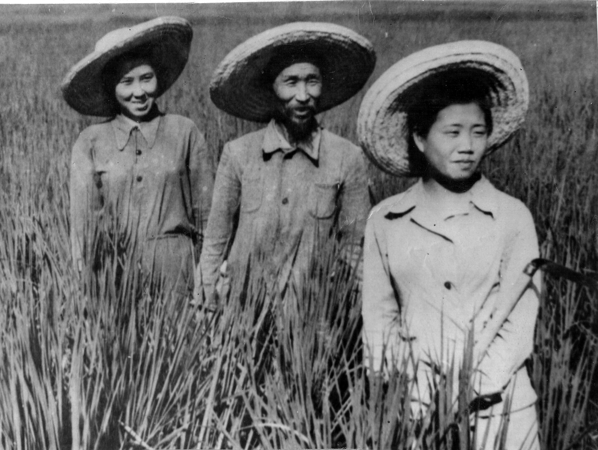

Koryo-saram: koreyslarning O'zbekistonga surgun qilinishi (1937) va koreys jamoasining shakllanishi
1937-yil kuzida Sovet hokimiyati Uzoq Sharqda yashagan koreyslarni ommaviy ravishda Markaziy Osiyoga — asosan Qozog'iston va O'zbekistonga majburan ko'chirdi. Bu — SSSRda butun bir xalqning faqat millati sababli surgun qilingan birinchi hodisasi edi. Ushbu tarixiy ma'lumotnoma surgun sabablari, ko'lami va O'zbekistondagi koreys (koryo-saram) jamoasining shakllanishini manbalar asosida bayon etadi.

O'zbekistonning ko'p millatli tarixida koreyslarning (koryo-saram) o'rni alohida. Ular bu yerga o'z xohishi bilan emas, balki 1937-yilgi majburiy surgun natijasida kelib qolgan va keyinchalik respublika qishloq xo'jaligi va jamiyatining ajralmas qismiga aylangan. Quyida bu jarayon faqat manbalarga asoslangan faktlar bilan yoritiladi; baholash farq qiladigan raqamlar taxminiy ekani alohida ta'kidlanadi.
Surgun qarori
1937-yil 21-avgustda SSSR Xalq Komissarlari Soveti № 1428-326сс maxfiy qarorini qabul qildi. Uni Vyacheslav Molotov va Iosif Stalin imzolagan; ko'chirish 1938-yil 1-yanvarga qadar yakunlanishi belgilangan edi. Sabab sifatida rasmiy hujjatlarda Yaponiya nazoratidagi Koreya va Manjuriya chegarasiga yaqin yashagan koreyslar orasida "yapon josusligi" xavfi bahona qilingan. Bu — SSSRda butun bir etnik guruhning faqat millati sababli ommaviy ko'chirilgan birinchi holati bo'ldi.
Ko'chirishning ko'lami
Manbalarga ko'ra, Uzoq Sharqdan Markaziy Osiyoga jami taxminan 171 781 kishi ko'chirildi. Ular 124 ta temir yo'l eshelonida, taxminan 6 400 kilometr masofaga, har bir eshelon uchun 30–40 kun davom etgan yo'l bilan olib ketildi. Yuk vagonlarida odamlar zich joylashtirilgan edi. Taqsimotga ko'ra, Qozog'iston SSRga ~20 141, O'zbekiston SSRga ~18 300 oila yuborildi; umumiy hisobda Qozog'istonga qariyb 100 000, O'zbekistonga 70 000 dan ortiq kishi tushdi. Faqat Toshkent viloyatiga 37 321 kishi joylashtirildi.

Yo'l va ilk yillar og'irligi
Surgun og'ir sharoitda kechdi. Halok bo'lganlar soni bo'yicha baholashlar farq qiladi — yo'lda va ilk yillardagi qiyinchiliklar (sovuq, ochlik, kasallik) hisobga olinsa, 16 500 dan 50 000 gacha deb keltiriladi. Kelgan joyda yetarli uy-joy va oziq-ovqat yo'q edi; ko'pchilik tashlandiq binolar, omborlar va vaqtinchalik boshpanalarga joylashtirildi.
Kolxozlar va qishloq xo'jaligi
Koreyslar tez orada qishloq xo'jaligiga yo'naltirildi. 1938-yil oktabriga kelib 18 649 koreys xo'jaligi 59 ta yangi kolxoz tuzgan, yana 3 945 tasi mavjud kolxozlarga qo'shilgan edi. O'zbekistonda koreys kolxozlari, ayniqsa Toshkent viloyatida, sholi (guruch) va paxta yetishtirishda yetakchiga aylandi. Markaziy Osiyoga sholichilikni keng joriy etishda koreys dehqonlari katta rol o'ynagani qayd etiladi.
Namunali xo'jaliklar
Ayrim koreys kolxozlari butun Ittifoqda namuna bo'ldi. Toshkent yaqinidagi "Politotdel" kolxozi mashhur edi. Kim Pen Xva (Kim Pyong-Xva) Toshkent yaqinidagi "Polyarnaya zvezda" ("Qutb yulduzi") kolxozini 34 yil, 1974-yilda vafotigacha boshqargan; u paxta, bug'doy va sholi yetishtirishdagi natijalari uchun ikki marta Sotsialistik Mehnat Qahramoni unvonini olgan.
Cheklovlar va reabilitatsiya
Surgun qilingan koreyslarning harakati uzoq vaqt cheklangan edi: 1947-yil 3-martda ularga pasport berish ruxsat etilgan bo'lsa-da, yashash hududi Markaziy Osiyo bilan chegaralangan. 1993-yil 1-aprelda Rossiya Federatsiyasi Oliy Kengashi 1937-yildan beri sovet koreyslariga nisbatan qabul qilingan hujjatlarni noqonuniy deb e'lon qildi va ularni siyosiy qatag'on qurbonlari sifatida reabilitatsiya qildi.
Bugungi jamoa
O'tgan o'n yilliklarda koreyslar O'zbekistonning barqaror va yaxshi integratsiyalashgan jamoalaridan biriga aylandi. Baholashlarga ko'ra, bugun O'zbekistonda qariyb 174 000 koreys yashaydi — bu Koreyadan tashqaridagi eng yirik koreys jamoalaridan biri. Shu tarixiy surgun fojiasi O'zbekistonning zamonaviy ko'p millatli qiyofasining bir qismiga aylandi.